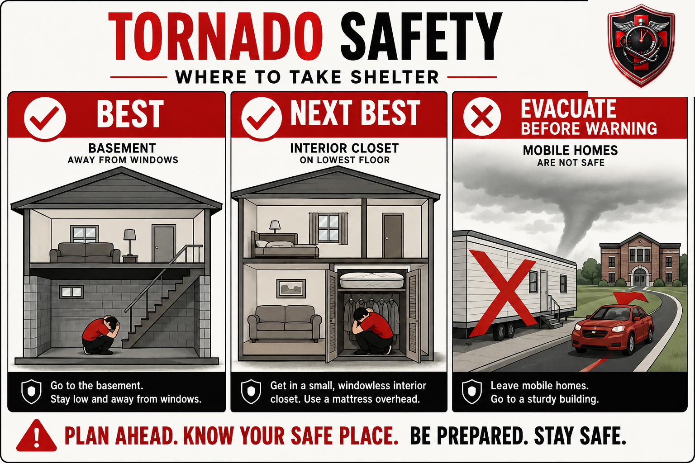

Tornado Response & Aftermath
A warning gives you minutes, not hours. What to do with them — where to shelter by home type, the mobile-home evacuation rule that saves lives, and how to stay safe in the dangerous hour after the storm passes.
1. Why the First Minutes Matter
A tornado warning does not give you an hour to prepare, or even ten minutes in many cases. The median lead time between a tornado warning being issued and the tornado actually arriving at a given location is typically in the range of eight to thirteen minutes — and some tornadoes, especially fast-developing or nighttime ones, give considerably less. This entire protocol is built around one fact: your shelter decision has to already be made before the warning sounds. There is no time, once the sirens start, to figure out for the first time where the safest room in your house is, or to have the conversation about whether your mobile home is safe to stay in.
That's the organizing idea behind this book. Every section that follows is written to be decided now, calmly, so that when a warning is issued the only thing left to do is execute — not deliberate.
2. Where This Applies: Tornado Alley
Unlike some of the emergencies covered elsewhere in this library, tornado risk is not evenly distributed across the country, and this book says so plainly instead of writing as if every reader faces identical odds. Tornadoes can and do happen in nearly every state, but the frequency and intensity are concentrated in two overlapping regions:
Two Risk Zones, Not One National Average
If you live outside both zones, tornadoes are still possible — every state has recorded one — but the day-to-day planning urgency in this book is written for readers in or near these regions. Check your county's historical tornado frequency with your local National Weather Service office if you're unsure where you fall.
This regional framing matters for practical reasons beyond statistics: building codes, storm-shelter prevalence, siren coverage, and even how seriously a "watch" is taken by neighbors all vary by how used to tornadoes a given community is. A newer resident who just moved into Tornado Alley from a region without tornadoes is at real, documented higher risk simply from not yet having internalized how fast a warning can turn into an actual tornado on the ground — this book is written to close that gap quickly.
3. Watch vs. Warning
These two words get used almost interchangeably in casual conversation, and that habit gets people killed. They mean two very different things, issued by the National Weather Service, and they call for two very different responses.
| Term | What it means | What you do |
|---|---|---|
| Tornado Watch | Conditions in your area are favorable for tornadoes to form. None has necessarily been spotted yet. Usually covers a large area for several hours. | Stay alert. Review your safe-location plan (Section 4), charge phones, bring in a portable weather radio, keep shoes and a helmet near your shelter spot. Don't go about your day assuming nothing will happen — but you don't need to shelter yet. |
| Tornado Warning | A tornado has been spotted by a person or indicated by radar, and is happening or imminent in your specific area. Typically covers a much smaller area for a much shorter window. | Act now. Go to your safe location immediately. This is not the time to keep watching the radar on your phone from the couch — get to shelter first, then monitor from there if you can. |
4. Best Shelter by Home Type
The right shelter location depends heavily on what kind of structure you live in — and one of those categories has a rule that is different from the rest, deliberately, because the physics of a mobile home in high wind are different from the physics of a house.
Basement
Below ground, away from windows, under a sturdy workbench or heavy table if one is available. Put as much mass and distance between yourself and the exterior walls as you can.
Interior Room / Closet
No basement? Go to a small interior room or closet on the lowest floor, with no windows — a bathroom, closet, or hallway near the center of the home. The more walls between you and the outside, the better.
Mobile Home
No mobile home, tied down or not, is a safe place to shelter from a tornado. Leave for a sturdier structure or a designated community shelter before a warning is issued — see the callout below.

What to do once you're in position, any home type
- Get under something sturdy if available (heavy table, workbench, mattress pulled overhead).
- Cover your head and neck with your arms, a helmet, blankets, or couch cushions.
- Stay away from windows, glass doors, and exterior walls.
- If in a multi-story building with no basement, go to the lowest floor's most interior room.
5. The Response Once a Warning Is Issued
This is the actual sequence, timed in minutes, not hours. Read it now so it's automatic later.
- Get to your safe location immediately. Don't finish the show, don't step outside to look at the sky first — go directly to the location you identified in Section 4.
- Bring what you can grab in seconds, not minutes. Phone, shoes, a helmet if one is nearby. Do not go looking for items in another room once the warning is out.
- Protect your head and neck. Arms over your head at minimum; a helmet, blanket, or mattress if you have one within reach.
- Get low and stay away from windows. Crouch or lie flat against an interior wall, away from anything glass.
- Stay where you are until you're sure it's over. The loudest, most violent moments of a tornado passing near your location are usually brief — often well under a minute for any single structure — but stay in place until local officials or the National Weather Service issue an "all clear," not just because the noise has stopped.
- Keep a battery or hand-crank radio nearby if possible. Power and cell service often fail during or after the storm; a radio keeps you informed without depending on either.
6. Aftermath Safety
Once the tornado has passed, the danger doesn't end — a large share of tornado-related injuries happen during cleanup and the immediate aftermath, not the storm itself. Move carefully and treat the following as non-negotiable.
Downed power lines
Gas leaks
If you smell natural gas (often described as a rotten-egg or sulfur smell) or hear a hissing sound near a gas line or appliance:
- Do not create a spark. Don't flip light switches, don't use your phone inside the structure, don't light a match or start a vehicle near the smell.
- Get everyone out immediately and move to a safe distance.
- Report it to your gas utility and 911 from outside the affected area — let them shut it off and re-enter only once they confirm it's safe.
Structural hazards
Do not re-enter a damaged structure to retrieve belongings or check on pets until it has been inspected and cleared. Walls can be unsupported, roofs can be ready to collapse, and floors can be structurally compromised in ways that aren't obvious from a quick look. Watch for broken glass, exposed nails, and unstable debris piles even outside a structure.
Debris injury risk
Cuts, punctures, and lacerations from broken glass, splintered wood, and twisted metal are extremely common in tornado aftermath — often more common than the injuries from the storm's wind itself. If you or someone nearby is bleeding significantly from debris, the technique doesn't change based on cause: direct pressure first, escalate to wound packing or a tourniquet if pressure alone isn't controlling it. See Severe Bleeding & Hemorrhage Control for the full step-by-step — that protocol's technique applies here without modification; this book won't re-teach it.
7. Checking on Neighbors
Once your own household is confirmed safe, checking on neighbors — especially elderly neighbors, people with mobility limitations, and anyone you know lives alone — is one of the most practical things you can do in the immediate aftermath, and it's a standard part of most community disaster-response guidance.
- Call out or knock rather than entering a damaged home uninvited — structural risk applies to their home just as much as yours (see Section 6).
- If someone doesn't answer and you have reason to believe they're home, report it to 911 or local emergency responders rather than forcing entry yourself.
- Share information, not just presence — if you have a working radio or cell signal and they don't, relay what you know about the storm's status and any official instructions.
- Don't put yourself at risk to check on others — downed lines, gas smells, and unstable structures in the area apply to this errand too.
8. Special Situations
Apartments and multi-family buildings
Go to the lowest floor you can reach, then to an interior hallway or room away from windows — a stairwell interior (not the stairs themselves) or an interior bathroom often works well. Avoid elevators; a power failure can trap you inside one. If your building has a designated shelter area, use it and know where it is before you need it, per Section 1's whole premise.
No basement available
This is common and it's fine — Section 4's "next best" option (a small interior room or closet on the lowest floor, no windows) is a genuinely effective shelter location, not a consolation prize. The core principle is walls and distance between you and the outside, not depth below ground specifically.
Caught outside or in a vehicle
If you're outside or driving when a warning is issued or a tornado becomes visible, get to a sturdy building immediately if one is within quick reach. If it isn't:
- Do not try to outrun a tornado in a vehicle unless a clear escape route exists and the tornado is far away and moving in a different direction — tornadoes can change direction and speed unpredictably, and traffic/debris frequently make outrunning one impossible in practice.
- Get out of the vehicle if you have no viable escape route and no sturdy building nearby.
- Move to a low-lying area away from the vehicle — a ditch or depression in the ground — lie flat, and cover your head and neck with your arms.
Evacuation routes already blocked
If you were planning to evacuate a mobile home or unsafe structure per Section 4 but a warning is issued before you can leave, don't attempt a last-second drive through worsening conditions — get to the lowest, most interior part of the structure you're in instead, understanding it's a fallback, not an equivalent substitute for actually having left earlier.
9. Essential Items Checklist
Keep these staged at or near your identified safe location — per Section 1, the whole point is not having to go looking for anything once a warning is issued.
- Battery or hand-crank weather radio — Section 5. Keeps you informed when power and cell service fail.
- Sturdy closed-toe shoes — Section 6. Debris on the floor is immediate and common after a tornado passes.
- Helmets (bike or similar) for every household member — Section 5. Head injury is a leading cause of tornado-related death; a helmet meaningfully reduces that risk.
- Heavy blanket or mattress pre-positioned in your safe room — Section 5. Extra protection for the whole body, not just the head.
- Your 1st Hour trauma kit — Section 6. Debris injuries after a tornado are common.
- Phone with a charged battery pack — Sections 5–7. For 911, checking in with family, and weather alerts.
- Written family meeting point/plan — Section 7. Especially important if household members are separated when a warning hits.
- Mobile-home evacuation destination, decided in advance — Section 4. The single most important planning item if this applies to you.
10. Medical Disclaimer
This guide is for general educational purposes only and does not constitute medical advice, diagnosis, or treatment, nor does it constitute official emergency management guidance. It is not a substitute for professional medical care, emergency medical services, a certified first aid, CPR, or Stop the Bleed course, or the instructions of local emergency management officials and the National Weather Service, all of which we strongly recommend following and, where applicable, taking in person.
In any real emergency, call 911 (or your local emergency number) immediately. Nothing in this guide should delay that call or override an official evacuation order or shelter instruction from local authorities.
1st Hour and its parent company make no warranty, express or implied, regarding outcomes from applying the information in this guide, and disclaim liability for actions taken based on its contents to the fullest extent permitted by law.
Editor's note: this edition reflects content as of August 24, 2026. 1st Hour periodically revises protocol guides as best practices evolve — visit 1sthourprotocols.com/tornado-response for the current edition and to re-download the latest PDF.